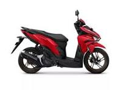

Media pembelajaran praktik Teknik Sepeda Motor kelas XI.
Mulai Pembelajaran
✓ Identifikasi komponen sistem suspensi
✓ Pemeriksaan kondisi komponen suspensi
✓ Pemeliharaan dan pengujian sistem suspensi
E-jobsheet ini digunakan sebagai panduan praktik untuk memahami, mengidentifikasi, membongkar, memeriksa, dan melakukan perawatan sistem suspensi depan tipe telescopik pada sepeda motor sesuai prosedur kerja.
Teknik Sepeda Motor
Pemeliharaan Sasis
Pemeliharaan Sistem Suspensi Depan Teleskopik
4 x 45 menit